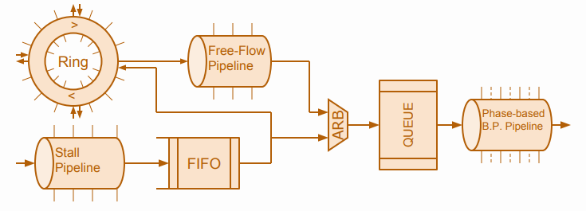
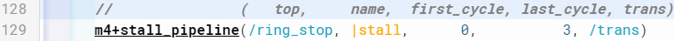

Transaction-Level Verilog (TL-Verilog) is an emerging language extension to System Verilog, Has the ability to define flexible reusable components. For this project, will develop a library of compatible components such as FIFOs, queues, arbiters, elastic buffers, etc. that could form the basis of a new era of hardware design,And will demonstrate the ease of composing these components into sophisticated transaction flows and quickly implementing what are currently considered to be complex designs, such as a complete on-chip network!
This big design with verilog Takes huge number of line but using Tl-verilog the code is alot less than hundered line
The library is very generic for example in this line just changing the last cycle will automatically generate a stall pipe line with different width and you can although change the hierarchy the same way
